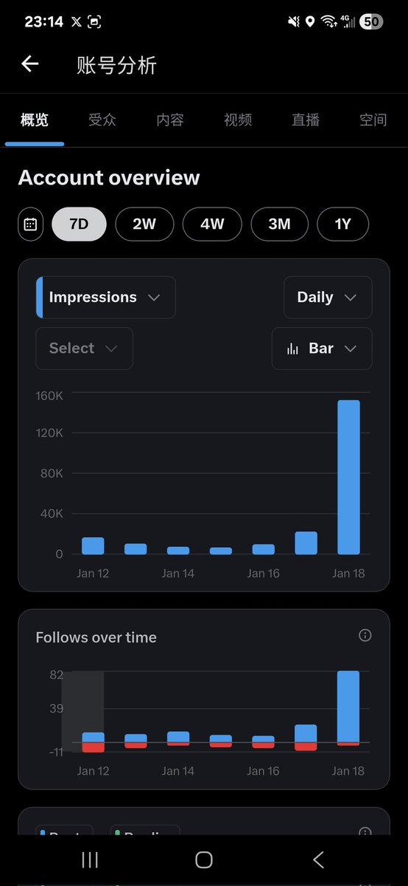

奶昔🥤
@realNyarime
@rionaifantasy 我甚至用了工具去查shadowban，怀疑自己是不是被X限流了。。。
确实，ADHD人士还是太需要正反馈，没人跟我互动我真的没有发帖的欲望了
也fo您了，如果您也喜欢我的内容，那可以回个fo，咱也不强求、彼此学习

RION WU
@rionaifantasy
你以为自己流量暴跌，是因为被限流了？
——实际上，只是因为X的算法调整
1月9号之前，我的账号流量还不错，但是10号之后直接被腰斩，导致我整个一周都没什么心情发帖（ADHD人士还是太需要正反馈了😂） https://t.co/stOFpqEOOz